01
Post page
Revamping the website to modernize, enhance usability, and facilitate users in achieving their goals effortlessly.

Problem
Majority of users arrived directly at the Post page from Google search, resulting in high traffic. However, user interviews unveiled issues with cluttered layouts, irrelevant ads, and outdated UX/UI, leading to increased bounce rates, reduced engagement, and non-compliant ads.
Our goal: Enhance Post pages to deliver relevant content, meaningful discussions, and a sense of community involvement.
52%
Users land on post pages making them the focal point
58%
Users leave the website from the post page
1%
Users explored relevant content or engaged further
After conducting a comprehensive website analysis and pinpointing user issues, I collaborated with the team to address the website's core challenges. We identified three key opportunities to assist users in achieving their goals.
SEO Compliance and Google Search Optimization
Blind website wasn't showing up on Google searches due to SEO issues. To address this, we aimed to achieve SEO compliance and improve the visibility of post pages in search results.
UX / UI refresh
We recognized the necessity to enhance post page usability, fostering increased user engagement and aiding them in discovering pertinent information and content.
Tailored content
The right rail content experienced less than 1% engagement due to its lack of relevance. It was crucial to customize content to align with user expectations and searches, thereby enabling users to discover more relevant content.
Some of the prominent issues on the website were as follows
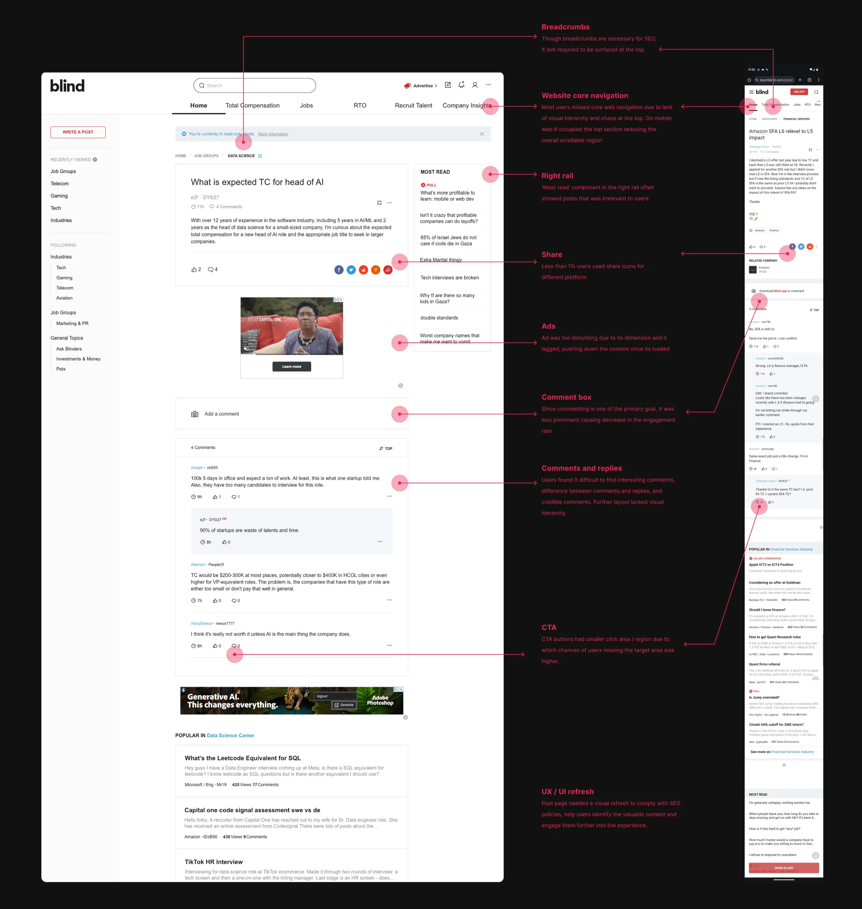
Layout exploratons
I initiated the process with competitive analysis and benchmarking for a social platform like Blind. Once benchmarks for the Post pages were established, I proceeded to sketch various layout explorations.
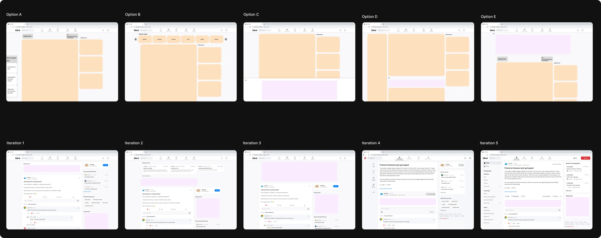
I assessed these layouts from a system perspective, focusing on navigation, core value to users, and decluttering for a better experience. After the initial high level explorations, I started adding details into the layouts.
Iteration 5 in the 2nd row not only improved focus on the Post page but also offered additional engagement with related content and a familiar navigational panel. Placing ads between the post and comments proved to be less disruptive compared to other options.
Finalized layout
Following option offered users a clear path to focus on content, provided additional access to related content on the right rail, and allowed easy access to different channels from the left navigation panel without disrupting the user flow.
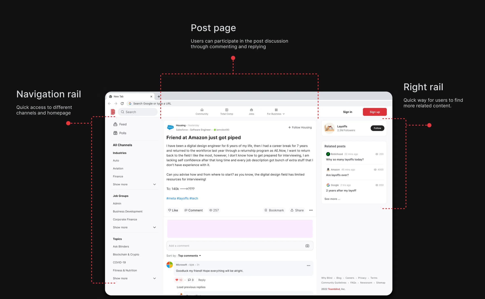
Diving deeper - Post page
I began by prioritizing the central core component, the post page, as the mobile template was readily available, making it relatively simple to ensure responsiveness to the web layout. I collaborated closely with an SEO consultant, the ads team, and stakeholders to ensure all design requirements were incorporated.
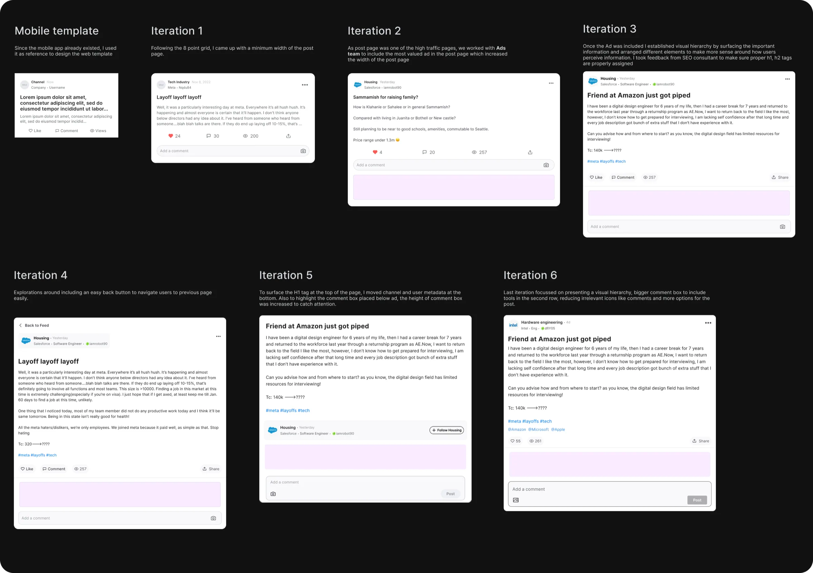
Setting up heirarchy and states
I started working on different states for various components within the post page to ensure every use case is taken care of.
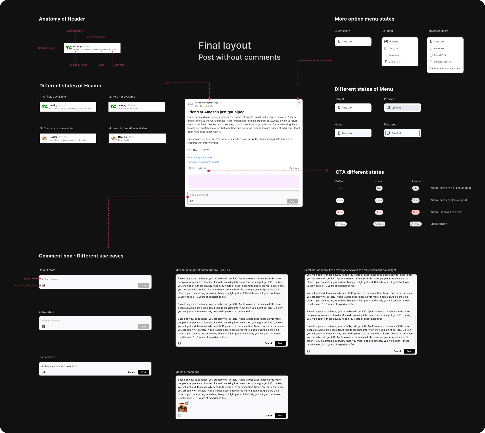
Going broader - Post with media
With the core layout for the post completed, I turned my attention to the various media elements within the post pages. Given that these media components were already in use on the mobile app, adapting them to be responsive within the web system was a straightforward process.
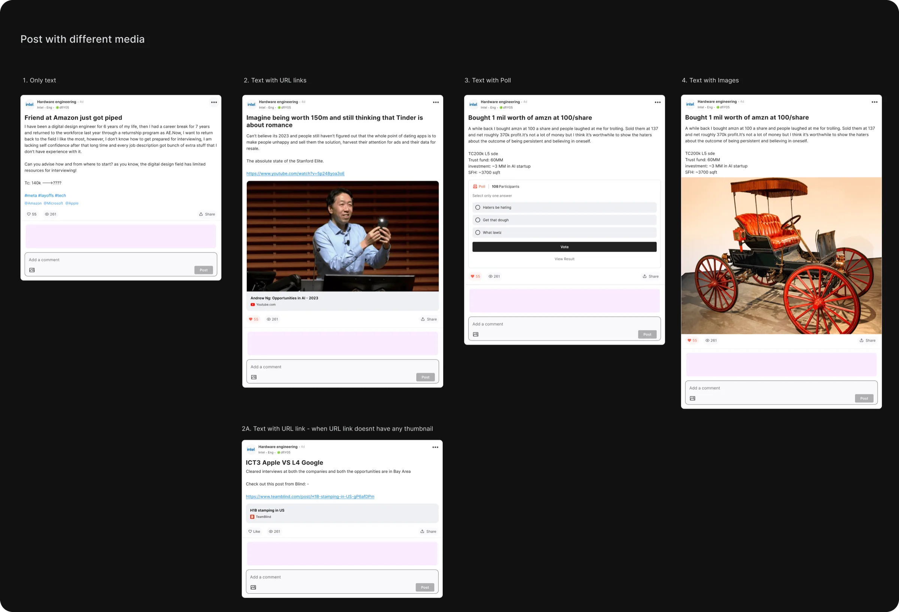
Variants for post with images
In the existing website, post pages with multiple images displayed them linearly, causing posts to become overly lengthy and making it challenging for users to scroll through numerous comments. To streamline the user experience and reduce post height, I collaborated with engineers to implement a condensed post view. This view features smaller thumbnails of all images for quick visual access, with the option to open the image viewer by clicking on a thumbnail.
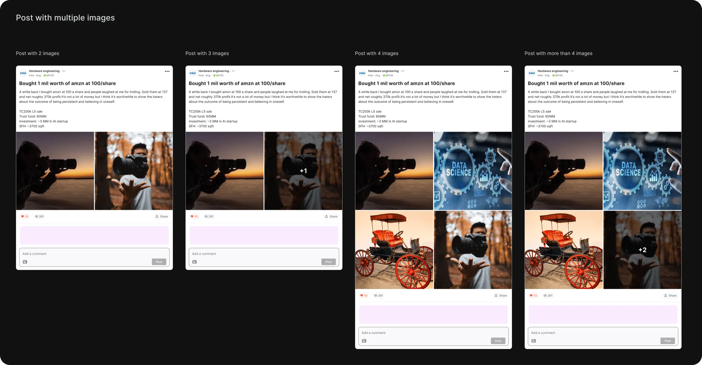
Image viewer
Comments & replies - Iterations
I followed a similar design process when revamping the comments and replies section for the posts. We introduced company logos alongside comments to enhance both legibility and credibility. My focus was on optimizing spacing and establish visual hierarchy to enable users to quickly identify engaging comments. Additionally, we implemented a guest user version where only the first 10 comments were visible by default, requiring users to log in to access the remaining comments.
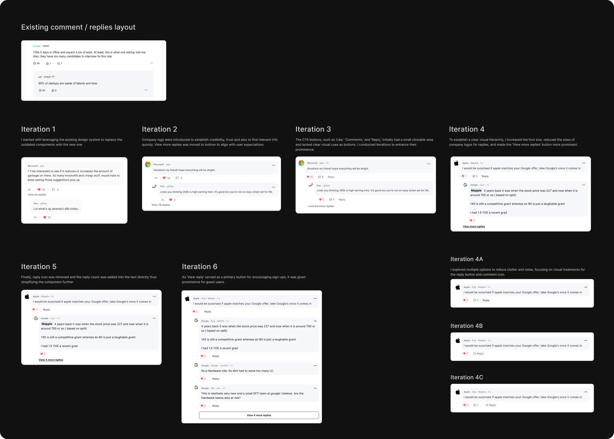
Balancing business and user needs
One of the engagement metrics revealed that user comments and active discussions improved post quality and helped other users find relevant posts easily. Additionally, the Post page garnered the highest traffic on the entire website, presenting a significant opportunity to drive user registrations. Therefore, it was essential to enhance the visibility and accessibility of the comment box to encourage user participation. This, in turn, had a positive impact on the business side by allowing us to recommend users to sign up for an improved experience. I initiated explorations to create layouts that made the comment box more prominent and easily accessible.
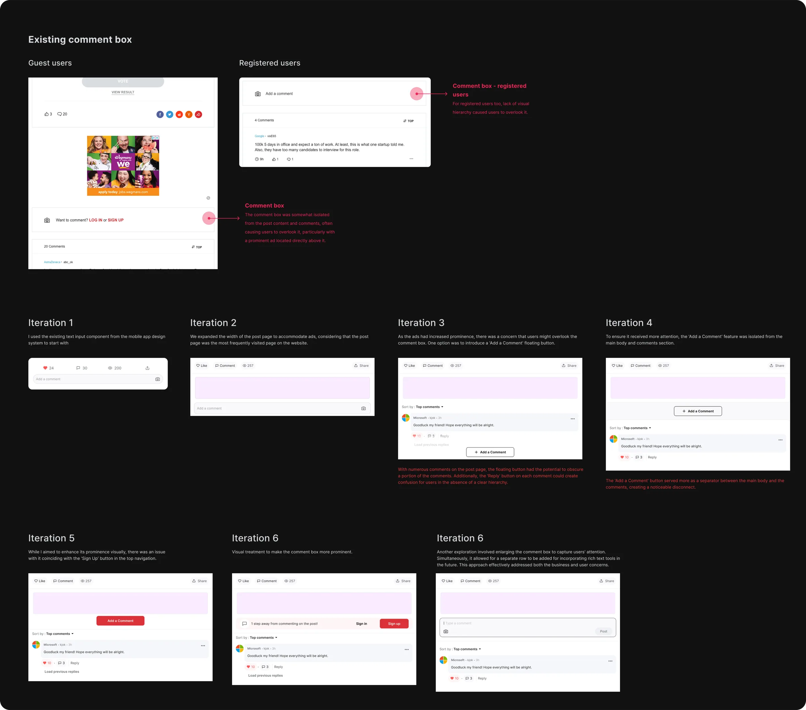
Commenting and replying use cases
I collaborated with engineers to identify the commenting and replying interactions, encompassing all potential edge cases and error states
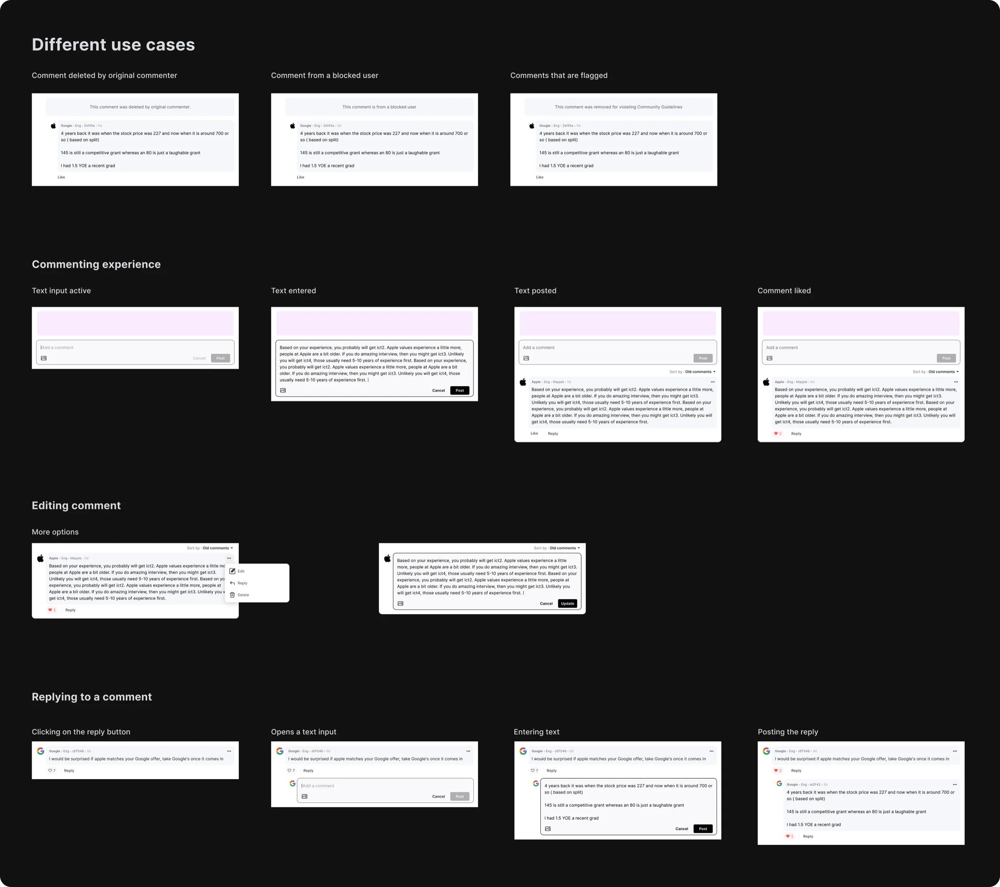
Final design
Upon finalizing the designs, I collaborated with the ads team and the Product Manager to incorporate various upscale components into the website. These enhancements allowed guest users to register and access the full features on the Blind website. Thereafter i started working on making the web responsive so that it can be accessed on mobile too.
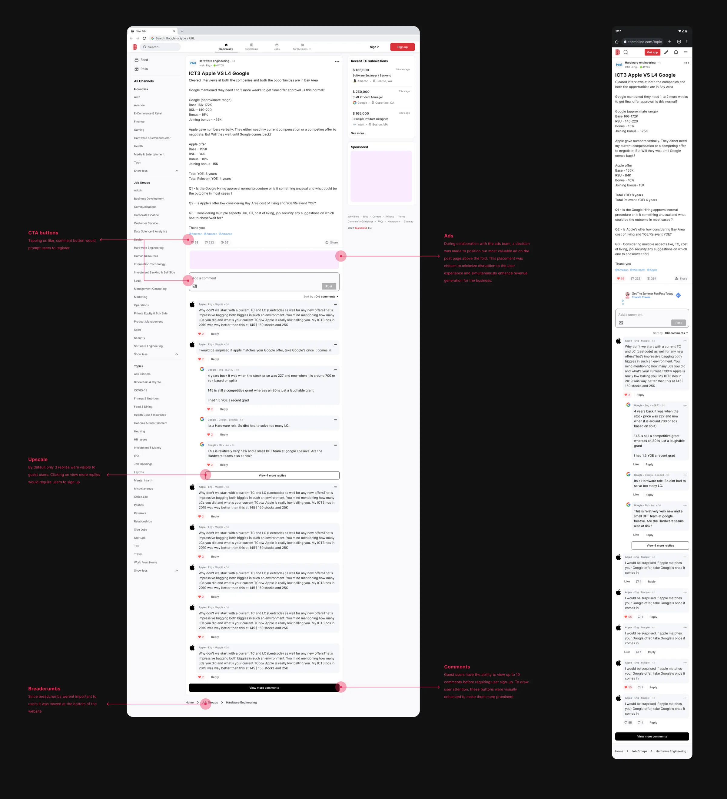